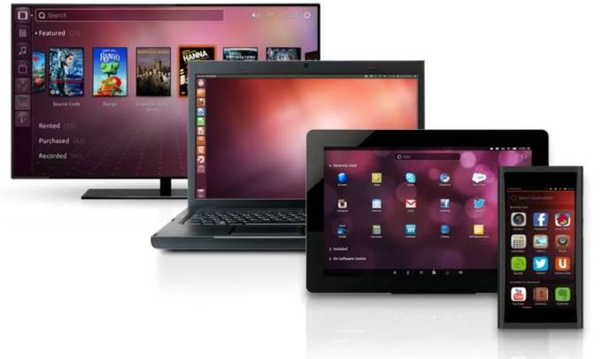

Microsoft recently announced that upcoming Windows Phone devices would be able to operate like desktop computers when you connect an external display, mouse and keyboard. That doesn’t just mean that you can run smartphone apps blown up for a big screen: you’ll be able to use Universal Windows apps which will change their look and feel for large screens and the operating system will look different on TVs too.
But Microsoft wasn’t the first company with this idea: Canonical’s been working on bringing similar features to Ubuntu for years. A few years ago the company tried to raise $32 million through crowdfunding to build an Ubuntu smartphone that could work as a desktop… but the company didn’t meet its goals.
Now Ubuntu founder Mark Shuttleworth says someone else is building one, and it’s set to launch in 2015.

Canonical’s Unity desktop environment for Ubuntu can already run across a range of devices with different screen sizes. That includes smartphones, tablets, notebooks, and TVs.
Apps that support “convergence” can run those different platforms while looking and behaving differently on each type of device. For instance an app could have a single-pane, full-screen view for smartphones. But the same app could have a multi-column layout on tablets and desktop and when you use the app on a desktop or notebook you’ll be able to run it in a window that can be resized and re-positioned.
That comes in handy if you want to create a single app that can be used on smartphones or desktop PCs. But it’s even cooler if you can buy a smartphone that becomes a desktop when you connect it to a mouse, keyboard, and external display.
Shuttleworth says Canonical is working with an unnamed smartphone manufacturer to release a phone that can do just that. It’s not entirely clear what kind of hardware to expect. We don’t know who’s building the phone, how much it will cost, or how it will connect to accessories: it’s possible there could be a docking station accessory, or support for wireless display, mouse, and keyboard connections.
Without talking about the specs for the upcoming phone, Shuttleworth says it won’t be as powerful as a high-end PC workstation, but it should provide a good enough experience for some day-to-day computing tasks.
But it looks like Canonical and Microsoft will be racing to see which company can bring their converged smartphone/desktop experience to potential users first.
Keep in mind that neither company is promising that you’ll be able to run every desktop app on your phone. But you’ll definitely be able to run some apps that are designed for Microsoft’s Universal Apps platform or Ubuntu’s converged desktop experience.
As far as Ubuntu is concerned, right now that mostly includes apps designed specifically for the Unity desktop environment. But Shuttleworth is asking developers of apps for GNOME, KDE, and other desktop environments to consider adding convergence features to their software as well.
Oh yeah, in related news Ubuntu 15.10 is due out in October, and Shuttleworth announced the code-name for the upcoming release: Wily Werewolf.